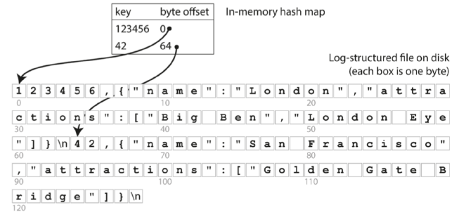
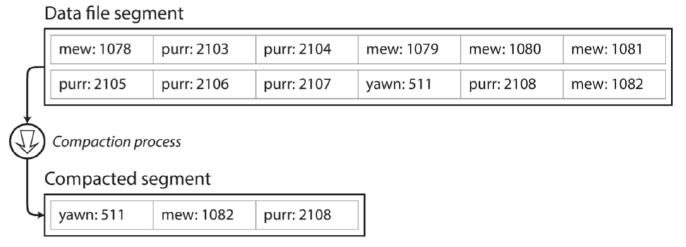
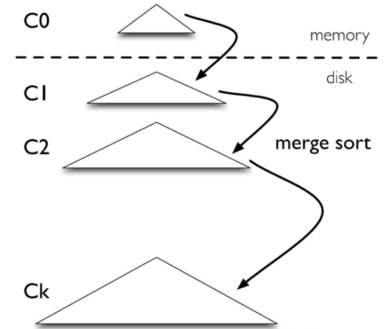

LSM-Tree
1. 背景
在 NoSQL 领域，key-value 是最常见的数据存储类型，如何高效的查询、修改和存储 key-value 是 NoSQL 的一个设计核心。
1.1 基础方案
一种直观的实现方式是在内存中维护哈希表存储所有数据（Redis），但这种方案会受到机器内存的限制。一个改进方案是使用硬盘存储数据，并在内存中维护索引。

上述方案仍存在两个关键问题：
- key-value 的频繁更新，将产生大量随机 IO，效率不高；
- 范围查询效率低。
1.2 顺序 IO
对于随机 IO 的问题，可以采用只允许追加的方式，key-value 按照写入的顺序出现，对于相同的 key，只有最新的值有效。这种方案将更新合并为顺序写入，提高了磁盘写入效率。

使用追加写入带来了一个新问题，如何避免用完硬盘空间？一个好的解决方案是分为特定大小的段，当增长到特定阈值时关闭当前段文件，并开始写入一个新的段文件，然后就可以对这些段进行压缩，丢弃重复的键，只保留最新的值，这个操作被称为 compaction。

1.3 范围查询
针对范围查询的问题，对段文件的格式进行改变，要求键值对按 key 排序，称其为排序字符串表 Sorted String Table，简称 SSTable。SSTable 的合并是十分简单并且高效的，采用（外部）归并排序即可。
除此之外，要求每个 key 在每个合并后的段文件中只出现一次（compaction 过程可以保证）。同时，在内存中维护一个有序数据结构 memtable。
此时的存储引擎工作如下：
- 写入时，将数据添加到 memtable 中；
- 当 memtable 达到阈值时，将其转为 SSTable 文件写入硬盘；
- 查询时将在 memtable 中进行，否则在各个 SSTable 文件中查询。
1.4 崩溃恢复
到此为此，这个方案只差一个问题：如果在 memtable 转为 SSTable 写入磁盘前发生崩溃，将会导致数据丢失。
一个有效的手段是保存一个单独的 log 文件，每次数据更改都会立马写入该文件，保证崩溃后可以恢复数据。
此处的机制类似 MySQL 中的 redo log，可见 MySQL中的redo log和binlog。
2. LSM-Tree
2.1 介绍
LSM-Tree 的设计理念是最大化利用硬盘的顺序写入性能，为 key-value 的修改提供高效的索引。LSM-Tree 在工业界中得到广泛应用，例如 Big Table、LevelDB。
LSM-Tree 的结构如下图所示，包含 多个组件，这些组件的容量依次增加。其中 位于内存中，底层实现为有序数据结构（红黑树或者跳表）；其余组件位于硬盘中，底层实现通常是 B 类树。

2.2 操作
2.2.1 修改
对于一次 key-value 的插入、更新或者删除操作，需要经过以下步骤：
- 以追加的方式写入 log 文件，保证崩溃后可恢复；
- 更新被写入到 中，对于用户而言操作已经结束了，后续步骤由后台线程异步执行；
当 的大小达到阈值时，将会进行 compaction，与 发生归并排序，用生成的新文件替代 。类似的，任意一个 达到阈值时，都会与下层 发生 compaction。
对于更新和删除操作，不会实际删除失效的值，而是在 compaction 时清除数据。
这种伪删除的思想在很多领域进行了应用，例如 MySQL 中的 purge。
2.2.2 查询
对于一次查询操作，可能需要查询多个组件。查询过程从 开始，不存在则查询 ，以此类推直到查询到目标键值或者到达最后一个组件。由此可见，对于查询不存在的数据，LSM-Tree 的开销很大。
LSM-Tree 正是通过牺牲查询性能来换取修改性能，这被称为读放大，即用户向存储引擎读取数据，存储引擎向硬盘读取数据总量大于用户读取的数据总量。
相对应的，也有写放大的概念。
可以有以下改进方案：
- 使用布隆过滤器，避免查询不存在的值，LevelDB 采用了此方案；
- 存储引擎采用键值存储分离，降低 LSM-Tree 的层数，例如 WiscKey。